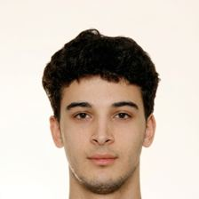

Computer Science & Engineering, TU/e. Engineer who ships real AI and computer vision systems.

AI tool that turns long Twitch and Kick VODs into ready-to-post vertical clips. Open for beta requests at audiencelabs.net. Built solo with AI-assisted development.
CLI that ranks candidate short-form clips by how likely they are to perform. MIT, 45 tests, CI. Source
AI pipeline that drafts and schedules a law office's social posts. A human approves every post before it goes out.
Member of the software team for a FIRST Robotics Competition robot.
Member of the TU/e AI student association.